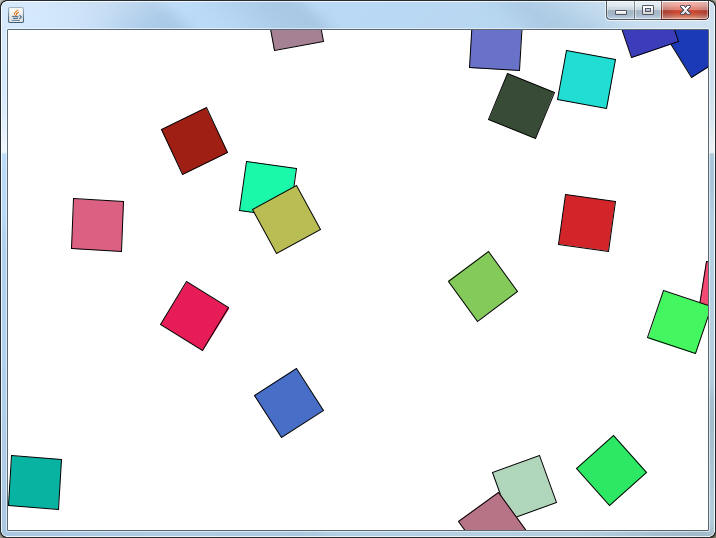
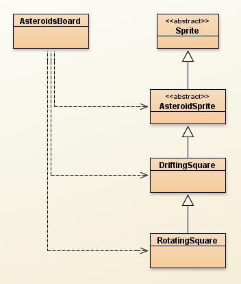

Asteroids: Rotating

Previously you used the Sprite class to create an AsteroidSprite that is going to be foundational to the Asteroids game that we're making. Since the AsteroidsSprite class was abstract it was important to have a DriftingSquare class if we wanted to test it. The hierarchy is getting a little hefty, here's a quick reminder.
The Sprite class:
- Primarily concerned with the x,y,width,height, along with the xVector and
yVector.
- The Sprite's bounding Rectangle is an instance
field, but the processBoundary method is abstract, meaning taken care of at
another level
- update is the driving method, it causes the move and
the processBoundary method to be called.
The AsteroidSprite class:
- Overrides the processBoundary method to move like the sprites do in an
Asteroid game. Go out one side, pop back in the other.
- Contains an isActive variable to control the calling
of the update method.
The DriftingSquare class:
- Overrides the paintSelf method so that a
DriftingSquare draws a Square centered at x and y
Adding Rotation:
You may have noticed that the Squares being drawn by the DriftingSquare class are not rotated at all. Both the Asteroids and the Ship class are going to have to rotate if they're going to act the way that we want. Now we're going to modify the AsteroidSprite class to have the ability to rotate. Afterwards we will have to do a minor modification to the DriftingSquare class for compilation purposes.
In AsteroidSprite:
- Add an int to the instance field that represents the rotation angle that the sprite should be drawn at.
- Add a getRotation and setRotation method.
Previously we did not override the paintSelf method at this level; we let the DriftingSquare override it to draw a square. Now that rotation is in the mix we are going to have to do a little bit of painting work.
Rotating an image is a three step process:
1) Rotate the PaintBrush around the center of the
image to be drawn
2) Draw the image
3) Reset the PaintBrush 's rotation so that the next
thing to be drawn with it isn't rotated
This causes a problem. When we override the paintSelf method, we can rotate and reset the brush, but at this level we still don't know how the sprite is going to draw itself. We need to use a different abstract method so that any inheriting class can paint itself.
Add the following abstract method:
public abstract void paintSprite(PaintBrush brush);
At the lowest level, this method has the same purpose of the original paintSelf method. It will be where the actual drawing occurs.
Now we can follow the three steps:
1) Rotate the PaintBrush around the center of the
image to be drawn
2)
Call the paintSprite method
3) Reset the PaintBrush 's rotation so that the next
thing to be drawn with it isn't rotated
Since we haven't dealt with rotation before, here's the paintSelf method that should be in the AsteroidSprite class. It only will compile if your rotation variable is named rotation
public void paintSelf(PaintBrush brush)
{
brush.rotateAroundPoint(rotation,getX(),getY());
paintSprite(brush);
brush.resetRotation();
}
Compile your project. The AsteroidSprite class should compile fine, but the DriftingSquare class will now be angry. Previously, paintSelf was an abstract method and paintSprite didn't exist. Now, paintSelf is not abstract to DriftingSquare and paintSprite is the abstract one. The simple solution is to change the name of the paintSelf method in DriftingSquare to paintSprite. Compile your project again and run it. Since the rotation is 0, the program should look exactly as it did before.
The RotatingSquare class:

Now that we've set up the ability to rotate our images, it's time to use it. Create a new class named RotatingSquare which extends DriftingSquare. This means that the vectors, colors, and painting are all taken care of. Our job is only to change the rotation as time goes on.
The only instance field that this class needs is an int to represent the rotation speed. This will be the change in rotation that occurs each time the Sprite is updated. For example, if the rotation starts at 0 and the rotation speed is 5, the sprite will first be drawn with a rotation of 0, then move a little and have a rotation of 5, then move a little and have a rotation of 10. This will make it look like it's spinning.
Add a default constructor to the RotatingSquare class. It should first call super(), and then set the rotation speed to a value between 3 and 10. Then use the inherited method to set the initial rotation to a random value between 0 and 360.
The only thing left to do is make the update method change the rotation. Override update so that it updates as usual, but also increases the rotation variable by however large the the rotation speed is. Don't forget what variables you have access to at this level. There are many inhererited methods to help you.
AsteroidsBoard
The last thing to do is modify the AsteroidsBoard so that it loads RotatingSquares instead of DriftingSquares. Because every RotatingSquare IS-A AsteroidSprite, you don't have to change the ArrayList to hold a different (hooray Polymorphism!). Add a method named loadRotatingSquares that is very similar to loadDriftingSquares, then go to the constructor and call the loadRotatingSquares method instead of the loadDriftingSquares method.
Compile and run to see if everything worked out. The squares should spin as they move like they did before.